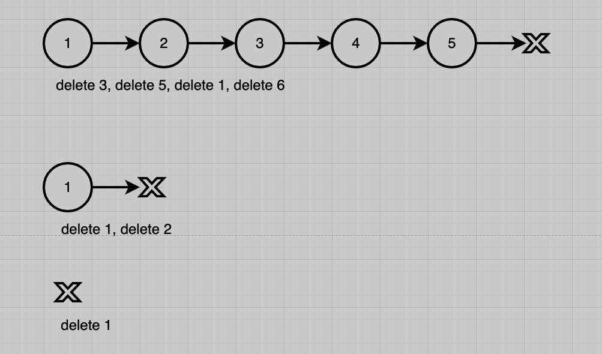
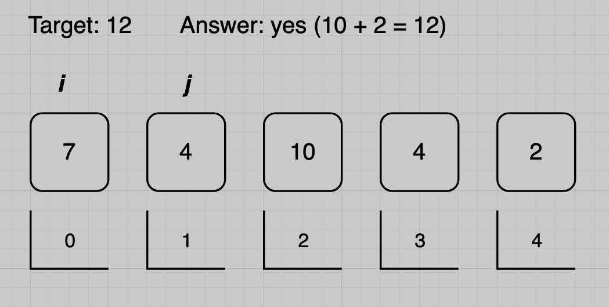

Week 02 Tutorial Questions
Recursion and Analysis of Algorithms
Recursion
For the questions below, use the following data type:
struct node {
int value;
struct node *next;
};
-
Write a recursive function to compute the length of a linked list. It should have this signature:
int listLength(struct node *l) { ... }
-
Write a recursive function to count the number of odd numbers in a linked list. It should have this signature:
int listCountOdds(struct node *l) { ... }
-
Write a recursive functions to check whether a list is sorted in ascending order. It should have this signature:
bool listIsSorted(struct node *l) { ... }
-
Write a recursive function to delete the first instance of a value from a linked list, if it exists. The function should return a pointer to the beginning of the updated list. Use the following interface:
struct node *listDelete(struct node *l, int value) { ... }
Refer to these linked list cases, as well as your own cases:How would you modify this recursive function to delete all instances of the value from the linked list? -
Recall that an alternative representation of a linked list uses a struct that contains a pointer to the first node of the list:
struct list { struct node *head; };
How would your recursive solutions for the above questions change if the functions took a
struct listpointer instead of a node pointer? For example:int listLength(struct list *l);
Analysis of Algorithms
-
Design an algorithm to determine if a string of length \( n \) is a palindrome - that is, it reads the same backwards as forwards.
Examples of palindromes: "radar", "noon"
Examples of non-palindromes: "reveler", "detected"- Write the algorithm in pseudocode.
- Analyse the worst-case time complexity of your algorithm.
-
Implement your algorithm in C. Your program should accept a
single command line argument, and check whether it is a
palindrome. Examples of the program executing are:
./palindrome racecar yes ./palindrome reviewer no
Hint: You may use the standard library function strlen(3), which has prototypesize_t strlen(char *), is defined in<string.h>, and which computes the length of a string (without counting its terminating'\0'character).
-
Using only techniques that you have learned so far, design an algorithm to determine if an array contains two elements that sum to a given value.
Refer to this two sum test case, as well as your own cases:- Write the algorithm in pseudocode.
-
Analyse the worst-case time complexity of your algorithm.
Here is a reference to arithmetic series formula - Implement your algorithm as a function in C. The algorithm should accept an array and a value as input and return true or false.